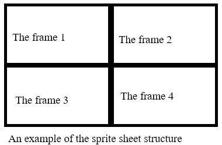

Eugene game development kit:
Programmer reference
Table of contents
Part 1. Welcome to
Eugene game development kit
Chapter 1.
Introduction
Introduction
Hello from Russia. My name is Popov Evgeniy Alekseyevich. I am the
individual programmer. I enjoy creating software. I also like old–school
video games. Do you want to develop video games for Microsoft Windows? You
need a good game engine for doing it. I made my own engine. I hope that my
C++ game engine will be useful for many programmers.
Features
Let me show the engine features. Let's go.
- Open source code.
- Easy to use object–orientated design.
- Very fast.
- Minimum external dependencies: only DirectX, OPENGL and standard
Windows API libraries.
- Don't need to link a main program with the engine binary file.
The engine is just source code files with all engine codes.
Installation
How install this engine? Follow these steps:
Copy these files to your project directory:
- eugenegdk.h
- eugenegdk.cpp
Add it to your project.
Add this directive to your code: #include "eugenegdk.h"
Yes. This is really all that you need to do.
Feedback
Send me e–mail if you want contact
with me.
Chapter 2. A special
thanks
I want to say «Big thanks for technical consultation» to these
peoples:
Also thanks to PVS–Studio team for free
license.
Chapter 3. License
Eugene game development
kit license
Copyright (C) 2021 – 2024 Popov Evgeniy Alekseyevich
This software is provided 'as–is', without any express or implied
warranty. In no event will the authors be held liable for any damages
arising from the use of this software.
Permission is granted to anyone to use this software for any purpose,
including commercial applications, and to alter it and redistribute it
freely, subject to the following restrictions:
1. The origin of this software must not be misrepresented; you must not
claim that you wrote the original software. If you use this software
in a product, an acknowledgment in the product documentation would be
appreciated but is not required.
2. Altered source versions must be plainly marked as such, and must not be
misrepresented as being the original software.
3. This notice may not be removed or altered from any source distribution.
Third–party license
Copyright (c) 2007 – 2010 The Khronos Group Inc.
Permission is hereby granted, free of charge, to any person obtaining a
copy of this software and/or associated documentation files (the
"Materials"), to deal in the Materials without restriction, including
without limitation the rights to use, copy, modify, merge, publish,
distribute, sublicense, and/or sell copies of the Materials, and to
permit persons to whom the Materials are furnished to do so, subject to
the following conditions:
The above copyright notice and this permission notice shall be included
in all copies or substantial portions of the Materials.
THE MATERIALS ARE PROVIDED "AS IS", WITHOUT WARRANTY OF ANY KIND, EXPRESS
OR IMPLIED, INCLUDING BUT NOT LIMITED TO THE WARRANTIES OF
MERCHANTABILITY, FITNESS FOR A PARTICULAR PURPOSE AND NONINFRINGEMENT. IN
NO EVENT SHALL THE AUTHORS OR COPYRIGHT HOLDERS BE LIABLE FOR ANY CLAIM,
DAMAGES OR OTHER LIABILITY, WHETHER IN AN ACTION OF CONTRACT, TORT OR
OTHERWISE, ARISING FROM, OUT OF OR IN CONNECTION WITH THE MATERIALS OR THE
USE OR OTHER DEALINGS IN THE MATERIALS.
Chapter 4. System
requirements
You can see minimum system requirement below.
| Operating system |
Windows XP or higher |
| Minimum color depth |
16 bits |
| Sound card |
Any sound card |
| Processor |
Intel Pentium II 400 MHz for 32–bit system |
| Intel Core 2 Duo for 64–bit system |
Chapter 5. Trouble
guide
You need Visual
C++ Redistributable Packages if you game code compiled under Visual C++.
Chapter 6. Compilers
This engine successfully tested with these compilers:
- TDM–GCC
- MINGW–w64
- Open Watcom
- Open Watcom V2 Fork
- Visual C++ 2003
- Visual C++ 2005
- Visual C++ 2008
- Visual C++ 2010
- Visual C++ 2012
- Visual C++ 2013
- Visual C++ 2015
- Visual C++ 2017
- Visual C++ 2019
- Visual C++ 2022
- C++ Builder 2010
- C++ Builder XE
- C++ Builder XE2
- C++ Builder XE3
- C++ Builder XE4
- C++ Builder XE5
- C++ Builder XE6
- C++ Builder XE7
- C++ Builder XE8
- C++ Builder 10 Seattle
- C++ Builder 10.1 Berlin
- C++ Builder 10.2 Tokyo
- C++ Builder 10.3 Rio
- C++ Builder 10.4 Sydney
- C++ Builder 11 Alexandria
Chapter 7. Platform
specific notes
Old processor support
You need one of follow compilers need for old processors support:
- Open Watcom
- Open Watcom V2 Fork
- Visual C++ 2003
- Visual C++ 2005
Windows XP support
You need one of follow compilers for Windows XP support:
- TDM–GCC
- Open Watcom
- Open Watcom V2 Fork
- Visual C++ 2003
- Visual C++ 2005
- Visual C++ 2008
Windows SDK and DirectX SDK
You need Windows
Server 2003 SP1 Platform SDK and DirectX
SDK February 2005 if you using Visual C++ 2005 Express.
Compiler optimization
Disable all compiler optimization for correct working. See documentation
of your favorite compiler for more information about compiler
optimization.
Note for Visual C++ users
Disable pre–compiled headers before start compilation. Old Visual C++
users can do it via project creation wizard.
Visual C++ 2017 or higher users must follow these steps:
- Go to «Project properties – C/C++ – Precompiled Headers»
- Set «Precomiled Header» option to «Not Using Precompiled
Headers»
Note for MINGW–w64 and TDM–GCC
users
Don't forget to link your program with these files:
- user32.lib
- kernel32.lib
- gdi32.lib
- opengl32.lib
- ole32.lib
- strmiids.lib
- winmm.lib
See documentation of the compiler for more information about linking.
Chapter 8. The engine
name–space
EUGENEGDK is the main
name–space. All the engine classes declared in few nested
namespaces.
Chapter 9. Custom
date types
Almost all custom data types declared in EUGENEGDK
namespace.
Part 2. Base things
Chapter 1. Coordinate
system
The engine uses standard coordinate system by default. Coordinates start
at top–left corner. Look to this picture to understand it.

Chapter 2. A game
cycle
What is the main point in your game? A game cycle. You can see the
structure of a typical game cycle below.

Part 3. Graphics
Chapter 1. The
sub–namespace
All subsystems in this section declared in Graphics
sub–namespace.
Chapter 2. Base
graphics subsystem
Introduce to base graphics
subsystem
Base graphics subsystem do rendering game scene. This subsystem using OPENGL for render. Most modern video–card
support hardware accelerated OPENGL. Software emulated OPENGL will
activate if hardware acceleration not available.
Render performance
Always use latest video–card drivers. It can increase render performance.
You can also try to change screen resolution if you have low render
performance.
Fps limitation
Fps is an important thing. Many fps need for good animation, but it also
needs high processor usage. Fps limit is 60 by default. It is optimal
value.
Work with base graphics
subsystem
Screen class provide access to
the base graphic subsystem. Let's look at public methods.
void Screen::clear_screen(); –
Clear the screen. Fill it by black color.
void Screen::initialize(); –
Initialize the base graphic subsystem with default screen resolution.
void Screen::initialize(const
unsigned int width,const unsigned
int heigt); –
Initialize the base graphic subsystem with custom screen resolution.
bool Screen::sync();
– Show current back–buffer content on screen. Return false if a game is
terminated. This method uses fps limit and do wait between frames.
bool Screen::update(); – Show
current back–buffer content on screen. Return false if a game is
terminated. This method ignoring fps limit and need high processor usage.
bool Screen::is_ready(); –
Return true if the subsystem is already initialized.
bool Screen::is_accelerated() const;
– Return true if render is hardware accelerated.
bool Screen::is_software() const;
– Return true if software render is active.
unsigned int Screen::get_fps() const;
– Return current fps value.
unsigned long int Screen::get_color()
const; – Return current color depth in bits per pixel.
unsigned int Screen::get_width() const;
– Return screen width in pixels.
unsigned int Screen::get_height()
const; – Return screen height in pixels.
bool Screen::check_x(const unsigned int
x) const; – Return true if x-coordinate is valid.
bool Screen::check_y(const
unsigned int y) const; – Return true if y-coordinate is valid.
Screen* Screen::get_handle(); –
Return the handle to base graphics subsystem object.
Chapter 3. Picture
subsystem
An important subsystem
Picture subsystem implement image storage.
Work with picture
subsystem
Picture class provide simple
access to picture subsystem. Don't use it directly. Let's look at public
methods.
unsigned int *Picture::get_image();
– Return handle to image storage.
void Picture::destroy_image();
– Destroy an image in the storage.
bool
Picture::is_storage_empty() const; – Return true if storage is
empty.
unsigned int Picture::get_image_width()
const; – Return image width in pixels.
unsigned int
Picture::get_image_height() const; – Return image height in
pixels.
size_t
Picture::get_image_lenght() const; – Return image length in
bytes.
Chapter 4. Animation
subsystem
An important subsystem
Animation subsystem let you control animation frames.
Frame indexing
First frame index is 1.
Work with animation subsystem
Animation class provide simple
access to animation subsystem. Don't use it directly. Let's look at public
methods.
unsigned int Animation::get_frames()
const; – Return amount of frames in scrollable background or
animated sprite.
unsigned int Animation::get_frame()
const; – Return current frame in scrollable background or
animated sprite.
bool
Animation::is_last_frame() const; – Return true if current frame
is last frame.
Chapter 5. Image kind
Image kind look as predefined constants. You can see it below.
Image kind
|
Description |
| STATIC_IMAGE |
Normal background or normal sprite
|
| HORIZONTAL_ANIMATED |
Horizontal scrolling background or horizontal strip |
| VERTICAL_ANIMATED |
Vertical scrolling background or vertical strip
|
Chapter 6. Background
Level decoration
Background is a big image. It is like decoration in theater stage. Any
game has a background. The background will stretch to screen resolution
before rendering the game scene.
There are two background kinds: normal background and scrolling
background. The scrolling background is a big image with few frames.
Horizontal orientated scrolling background look like horizontal orientated
photo ribbon. Vertical orientated scrolling background look like vertical
orientated photo ribbon.
Work with background
Just use Background class to
work with background. Let's look at public methods.
void Background::prepare(const Screen
*screen); – Prepare for drawing.
void Background::prepare(Screen
&screen); – Prepare for drawing.
void Background::prepare(const unsigned
int width,const unsigned int heigt); – Prepare for drawing.
void Background::disable_mirror();
– Disable background mirroring mode.
void Background::horizontal_mirror();
– Set horizontal background mirroring mode.
void Background::vertical_mirror();
– Set vertical background mirroring mode.
void Background::complex_mirror();
– Set both horizontal and vertical background mirroring mode.
void Background::set_target(const
unsigned int target); – Set target frame in scrollable
background.
void Background::step(); –
Increase number of target frame in scrollable background. Set it to 1 if
number of target frame more than frame amount.
void Background::set_setting(const
EUGENEGDK::IMAGE_KIND kind,const unsigned int frames); – Set
setting. Last argument will ignore if background is not scrollable.
void Background::load(Image
*background,const EUGENEGDK::IMAGE_KIND kind,const unsigned int frames);
– Load background from the buffer.
void Background::load(Image
&background,const EUGENEGDK::IMAGE_KIND kind,const unsigned int
frames); – Load background from the buffer.
void Background::load(Image
*background); – Load normal background from the buffer.
void Background::load(Image
&background); – Load normal background from the
buffer.
void Background::load(const char
*name,const EUGENEGDK::IMAGE_KIND kind,const unsigned int frames);
– Load background from target file.
void Background::load(const char *name);
– Load normal background from target file.
void Background::draw(); – Draw
a background.
void Background::draw(const unsigned int
target); – Draw target frame in scrollable background.
void Background::destroy_image();
– Destroy a background image.
void Background::destroy(); –
Destroy a background image and destroy a background texture.
unsigned int Background::get_frame()
const; – Return current frame in scrollable background.
unsigned int Background::get_frames()
const; – Return frame amount in scrollable background.
unsigned int Background::get_width()
const; – Return the width of the background.
unsigned int Background::get_height()
const; – Return the height of the background.
EUGENEGDK::IMAGE_KIND
Background::get_kind() const; – Get background type.
Background texture
Background don't draw if background texture is don't exist. Background
texture will automatically create after call load_background
method.
Important notice
Always call prepare method after
load background.
Chapter 7. Base
sprite subsystem
Small important
thing
A sprite is a transparent image. It is useful for many things: enemies,
bonuses, etc.
Work with base sprite subsystem
Billboard class provide simple
access to base sprite subsystem. Don't use it directly. Let's look at
public methods.
void
Billboard::set_transparent(const bool enabled); – Enable or
disable the transparent mode.
bool Billboard::get_transparent()
const; – Return true if transparent mode is enable.
void
Billboard::set_position(const unsigned int x, const unsigned int y);
– Set sprite position.
void Billboard::set_start(const unsigned
int x, const unsigned int y); – Set start position of the sprite.
void Billboard::set_size(const unsigned
int width, const unsigned int height); – Change the sprite size.
void Billboard::set_x(const
unsigned int x); – Set x–coordinate of the sprite position.
void Billboard::set_y(const
unsigned int y); – Set y–coordinate of the sprite position.
void
Billboard::set_width(const unsigned int width); – Change the
sprite width.
void Billboard::set_height(const
unsigned int height); – Change the sprite height.
unsigned int Billboard::increase_x(); – Increase
x–coordinate and return increased x–position.
unsigned int Billboard::decrease_x(); – Decrease
x–coordinate and return decreased x–position.
unsigned int Billboard::increase_y(); – Increase
y–coordinate and return increased y–position.
unsigned int Billboard::decrease_y(); – Decrease
y–coordinate and return increased y–position.
unsigned int Billboard::increase_x(const unsigned int
increment); – Increase x–coordinate with user value and return
increased x–position.
unsigned int Billboard::decrease_x(const unsigned int
decrement); – Decrease x–coordinate with user value and return
decreased x–position.
unsigned int Billboard::increase_y(const unsigned int
increment); – Increase y–coordinate with user value and return
increased y–position.
unsigned int Billboard::decrease_y(const unsigned int
decrement); – Decrease y–coordinate with user value and return
decreased y–position.
unsigned int
Billboard::get_x() const; – Return x–coordinate of the sprite
position.
unsigned int Billboard::get_y() const;
– Return y–coordinate of the sprite position.
unsigned int Billboard::get_width()
const; – Return the width of the sprite.
unsigned int Billboard::get_height()
const; – Return the height of the sprite.
EUGENEGDK::BOX
Billboard::get_box() const; – Return collision related
information.
void Billboard::disable_mirror();
– Disable sprite mirroring mode.
void Billboard::horizontal_mirror();
– Set horizontal sprite mirroring mode.
void Billboard::vertical_mirror();
– Set vertical sprite mirroring mode.
void Billboard::complex_mirror();
– Set both horizontal and vertical sprite mirroring mode.
void Billboard::go_start(); – Set
sprite position to start position.
void
Billboard::draw(); – Draw a sprite.
void Billboard::draw(const
unsigned int x, const unsigned int y); – Set sprite position and
draw it.
void Billboard::draw(const bool transparency); – Set
transparent mode and draw a sprite.
void Billboard::draw(const bool transparency,const unsigned
int x, const unsigned int y); – Set transparent mode and draw a
sprite at target position.
Chapter 8. Ordinary
sprites
Sprite types
There are two kinds of ordinary sprites: normal sprites and strip. The
strip is an animated sprite. Do you remember an analog camera?
Strip look like photo ribbon. Horizontal strip look like the horizontal
orientated photo ribbon.
Vertical strip look like the vertical orientated photo ribbon.
Frame indexing
First frame index is 1.
Work with sprites
Just use Sprite class to work
with a sprite. It is derived from threeclasses: Billboard,
Animation and Picture.
Let's look at public methods.
void Sprite::set_setting(const
EUGENEGDK::IMAGE_KIND kind,const unsigned int frames); – Set
sprite settings. Last argument will ignore if sprite not animated.
void Sprite::load(Image *buffer,const
EUGENEGDK::IMAGE_KIND kind,const unsigned int frames); – Load a
sprite from the buffer and set it setting.
void Sprite::load(Image *buffer);
– Load a normal sprite from the buffer.
void Sprite::load(Image
&buffer,const EUGENEGDK::IMAGE_KIND kind,const unsigned int frames);
– Load a sprite from the buffer and set it setting.
void Sprite::load(Image &buffer);
– Load a normal sprite from the buffer.
void Sprite::load(const char *name,const
EUGENEGDK::IMAGE_KIND kind,const unsigned int frames); – Load a
sprite from target file and set it setting.
void Sprite::load(const
char *name); – Load a
normal sprite from target file.
void Sprite::set_target(const unsigned
int target); – Set target frame in strip.
void Sprite::step(); – Increase
number of target frame in strip. Set it to 1 if number of target frame
more than frame amount.
EUGENEGDK::IMAGE_KIND
Sprite::get_kind() const; – Get sprite type.
Sprite*
Sprite::get_handle(); – Return the handle to sprite object.
void Sprite::clone(Sprite *target);
– Create copy of the sprite if the image storage of target sprite is not
empty.
void Sprite::clone(Sprite &target);
– Create copy of the sprite if the image storage of target sprite is not
empty.
void Sprite::destroy(); –
Destroy a sprite image and destroy a sprite texture.
Sprite texture
Sprite will don't draw if sprite texture is don't exist. Sprite texture
will automatically create when load or clone sprite.
Chapter 9. Sprite
sheet
Some words about sprite
sheet
Sprite sheet is a special kind of animated sprites. Each frame has fixed
size. A sprite sheet is a matrix of frames. Look to this picture to
understand it.

Rows and columns
First row index is 1. First column index is 1.
Work with sprite sheet
subsystem
Sheet class provide access to
the sprite sheet subsystem. It is derived from three classes:
Billboard, Picture
and Animation. Let's look at
public methods.
bool Sheet::check_row(const unsigned int
target) const; – Return true if target row is valid.
bool Sheet::check_column(const unsigned
int target) const; – Return true if target column is valid.
unsigned int Sheet::get_row(const unsigned int target)
const; – Return row of target frame.
unsigned int Sheet::get_column(const unsigned int target)
const; – Return column of
target frame.
unsigned int
Sheet::calculate(const unsigned int row,const unsigned int column)
const; – Calculate the frame by row and column.
unsigned int
Sheet::get_rows() const; – Return row amount.
unsigned int Sheet::get_columns()
const; – Return column amount.
void Sheet::destroy();
– Destroy a sprite sheet image and destroy a sprite sheet texture.
void Sheet::select(const
unsigned int row,const unsigned int column); – Select the sprite
by row and column.
void Sheet::select(const
unsigned int target); – Select the sprite by frame number.
void Sheet::step(); –
Increase number of target frame. Set it to 1 if number of target frame
more than frame amount.
void Sheet::load(Image
*sheet,const unsigned int row_amount,const unsigned int column_amount);
– Load a sprite sheet from the buffer.
void Sheet::load(Image &sheet,const
unsigned int row_amount,const unsigned int column_amount); – Load
a sprite sheet from the buffer.
void Sheet::load(const char *name,const
unsigned int row_amount,const unsigned int column_amount); – Load
a sprite sheet from tagret file.
Sheet* Sheet::get_handle(); –
Return the handle to sprite sheet.
void Sheet::clone(Sheet *target);
– Create copy of the sprite sheet if the image storage of target sprite
sheet is not empty.
void Sheet::clone(Sheet &target);
– Create copy of the sprite sheet if the image storage of target sheet
sprite is not empty.
Sprite sheet texture
Sprite will don't draw if sprite sheet texture is don't exist. A sprite
sheet texture will automatically create after call load_sheet
method.
Chapter 10. Text
How to draw a text?
Just use text subsystem to draw a text. This subsystem need a font for
text drawing. You must load a font before start draw the text. The font is
just a sprite sheet with 16 rows and 16 columns.
Valid characters
Only 8–bit characters supported.
Text orientation
Text orientation look as predefined constants. You can see it below.
Text orientation
|
Description |
| HORIZONTAL_TEXT |
Horizontal orientated text
|
| VERTICAL_TEXT |
Vertical orientated text |
Work with text
Text class provide a simple
interface to text subsystem. Let's look at public methods.
EUGENEGDK::TEXT_KIND
Text::get_orientation() const; – Get current text orientation.
void Text::set_orientation(const
EUGENEGDK::TEXT_KIND target); – Set current text orientation.
unsigned int Text::get_font_width()
const; – Get current font width in pixels.
unsigned int Text::get_font_height()
const; – Get current font height in pixels.
void Text::set_position(const unsigned
int x,const unsigned int y); – Set output position.
void Text::set_size(const unsigned int
width,const unsigned int height); – Change the font size.
void Text::set_width(const
unsigned int width); – Set the font width.
void Text::set_height(const
unsigned int height); – Set the font height.
void Text::set_setting(const unsigned
int width,const unsigned int height,const EUGENEGDK::TEXT_KIND kind);
– Set text output settings.
void Text::load_font(Image *font);
– Load a font from the buffer.
void Text::load_font(Image &font);
– Load a font from the buffer.
void Text::load_font(const char *name);
– Load a font from target file.
void Text::print(const char target);
– Draw single character at current position.
void Text::print(const char *target);
– Draw text at current position.
void Text::print(const unsigned int
x,const unsigned int y,const char target); – Draw single
character at specific position.
void Text::print(const unsigned int
x,const unsigned int y,const char *target); – Draw text at
specific position.
void Text::disable_mirror(); –
Disable text mirroring mode.
void Text::horizontal_mirror(); –
Set horizontal text mirroring mode.
void Text::vertical_mirror(); –
Set vertical text mirroring mode.
void Text::complex_mirror(); –
Set both horizontal and vertical text mirroring mode.
void Text::destroy_image(); –
Destroy a font image.
void Text::destroy_font(); –
Destroy a font image and destroy a font texture.
Chapter 11. Loading
images
Load an image from files
Use image loader to load an image from a file. Image
class provide simple access to image loader. It is a simple class with few
methods.
unsigned
char *Image::load_tga(const
char *name); – Load a Truevision TGA image and return handle to
image buffer.
unsigned char *Image::get_data();
– Return handle to image buffer.
unsigned int Image::get_width() const;
– Return width of current image.
unsigned int Image::get_height() const;
– Return height of current image.
size_t Image::get_length() const;
– Return length of image buffer in bytes.
Image* Image::get_handle(); –
Return the handle to image loader.
void Image::destroy_image(); –
Destroy the current image and free image buffer.
Important remark
A new image will replace current image if current image already exist.
Incorrect images will ignore and don't load.
Supported format
All loading images must have correct specification. You can load an
image from 32 bit Truevision
TGA pictures.
Recommend software
You can use a wide range of graphics software to convert your images to
the correct format. I recommend use GIMP
for doing it. It is a powerful image editor.
Part
4. Transformation
Chapter
1. The sub–namespace
All subsystems in this section declared in Transformation
sub–namespace.
Chapter
2. Cartesian coordinates and screen coordinates
Cartesian coordinates
Cartesian coordinates start at center of the screen. Look to this picture
to understand it.

Cartesian coordinates to screen
coordinates conversion and screen coordinates to cartsian coordinates
conversion
You can convert cartesian coordinates to screen coordinates. You can also
convert screen coordinates to cartesian coordinates.
Just use Coordinates class for
doing it. Let's look at public methods.
void Coordinates::initialize(const int
viewport_width,const int viewport_height); – Initialize the
subsystem.
int Coordinates::get_viewport_width()
const; – Return view-port width in pixels.
int Coordinates::get_viewport_height()
const; – Return view-port height in pixels.
int
Coordinates::get_lowest_cartesian_x() const; – Return lowest
allowable cartesian x-coordinate.
int
Coordinates::get_highest_cartesian_x() const; – Return highest
allowable cartesian x-coordinate.
int
Coordinates::get_lowest_cartesian_y() const; – Return lowest
allowable cartesian y-coordinate.
int
Coordinates::get_highest_cartesian_y() const; – Return highest
allowable cartesian y-coordinate.
bool
Coordinates::check_cartesian_x(const int x) const; – Return true
if the cartesian x-coordinate is valid.
bool
Coordinates::check_cartesian_y(const int y) const; – Return true
if the cartesian y-coordinate is valid.
int Coordinates::get_screen_x(const int
x) const; – Convert cartesian x-coordinate to screen
x-coordinate.
int Coordinates::get_screen_y(const int
y) const; – Convert cartesian y-coordinate to screen
y-coordinate.
int Coordinates::get_cartesian_x(const
int x) const; – Convert screen x-coordinate to cartesian
x-coordinate.
int Coordinates::get_cartesian_y(const
int y) const; – Convert screen y-coordinate to cartesian
y-coordinate.
Chapter 3. Cartesian
coordinates and isometric coordinates
A few words about isometric
Isometric
is very popular way for pseudo-3D games. Many old-school games are
isometric games.
Cartesian coordinates
to isometric coordinates conversion and isometric coordinates to
cartsian coordinates conversion
You can convert cartesian coordinates to isometric coordinates. You can
also convert isometric coordinates to cartesian coordinates.
Just use Isometric class for
doing it. Let's look at public methods.
void
Isometric::set_target(const int x,const int y); – Set target
point.
int
Isometric::get_isometric_x() const; – Convert x-coordinate of
target point from cartesian system to isometric system.
int Isometric::get_isometric_y() const;
– Convert y-coordinate of target point from cartesian system
to isometric system.
int Isometric::get_cartesian_x() const;
– Convert x-coordinate of target point from isometric system
to cartesian system.
int Isometric::get_cartesian_y() const;
– Convert y-coordinate of target point from isometric system
to cartesian system.
int Isometric::get_isometric_x(const int
x,const int y); – Set target point and convert x-coordinate from
cartesian system to isometric system.
int Isometric::get_isometric_y(const int
x,const int y); – Set target point and convert
y-coordinatefrom cartesian system to isometric system.
int Isometric::get_cartesian_x(const int
x,const int y); – Set target point and convert
x-coordinatefrom isometric system to cartesian system.
int Isometric::get_cartesian_y(const int
x,const int y); – Set target point and convert
y-coordinate from isometric system to cartesian system.
Chapter 4. Isometric
level
Isometric level
subsystem intend for help you to create an isometric levels. Just use World class for doing it. Let's look
at public methods.
void World::initialize(const int
tile_width,const int tile_height,const
int screen_width,const int screen_height);
– Initialize the subsystem.
int World::get_target_x(const int row,const int column)
const; – Get target cartesian x-coordinate from the row and
column.
int World::get_target_y(const int row,const
int column) const; –
Get target cartesian y-coordinate from the row and column.
int World::get_row(const int x,const int y)
const; – Get the row from target point.
int World::get_column(const int y,const
int y) const; – Get
the column from target point.
int World::get_row_amount() const;
– Get amount of maximum visible rows.
int World::get_column_amount() const;
– Get amount of maximum visible columns.
int World::get_tile_amount() const;
– Get amount of maximum visible isometric tiles.
Part 5. Common things
Chapter 1. The
sub–namespace
Almost all subsystems in this section declared in Common
sub–namespace.
Chapter 2. Abnormal
program termination
You can use Halt function to
terminate a program. This function declared in EGENEGDK
name–space.
void EUGENEGDK::Halt(const char
*message); – Terminate the program. Write error message to log
file if logging enabled.
Chapter 3. Timer
Timer is a very useful thing. Just use Timer
class to work with the timer. Let's look at public methods.
void Timer::set_timer(const double
seconds); – Set timer interval and initialize start point.
double Timer::get_interval() const;
– Return current timer interval.
bool Timer::check_timer(); –
Return true and reinitialize start point if interval between stop and
start points large or equal than specific seconds.
Chapter 4. Collision
An important thing for any
game
What is an important thing for a video games? A collision.
Collision detail
Collision detector using bounding box collision method to detect
collision. Collision related information store in special custom data
type.
typedef struct
{
unsigned int x;
unsigned int y;
unsigned int width;
unsigned int height;
} BOX;
Work with collision detector
Collision class provide easy
access to collision detector. It is a simple class with few methods. Let's
look at public methods.
void Collision::set_target(const
EUGENEGDK::BOX &first_target,const EUGENEGDK::BOX
&second_target); – Set targets for collision detector.
bool Collision::check_collision()
const; – Return true if collision between two objects is
accepted.
bool Collision::check_collision(const
EUGENEGDK::BOX &first_target,const EUGENEGDK::BOX
&second_target); – Set collision targets and check collision
between it.
Chapter 5. Tile–map
A few words about tile-map
The tile–map is tile matrix. A tile is a small non–transparent
sprite. A tile–map is very useful thing for level
background.
Rows and columns
First row index is 0. First column index is 0.
Work with tile-map
Tilemap class provide easy access
to the tile–map. It is a simple class with few
methods. Let's look at public methods.
void Tilemap::initialize(const unsigned
int tile_width,const unsigned int tile_height); – Initialize the
subsystem.
unsigned int
Tilemap::get_tile_width() const; – Return the tile width in
pixels.
unsigned int
Tilemap::get_tile_height() const; – Return the tile height in
pixels.
unsigned int
Tilemap::get_x(const unsigned int
row) const; – Get
x-coordinate from target row.
unsigned int
Tilemap::get_y(const unsigned int
column) const; – Get
y-coordinate from target column.
unsigned int
Tilemap::get_row(const unsigned
int x) const; – Get
the row from x-coordinate.
unsigned int
Tilemap::get_column(const unsigned
int y) const; – Get
the column from y-coordinate.
unsigned int
Tilemap::get_row_amount(const unsigned
int viewport_width) const;
– Get amount of maximum visible rows.
unsigned int
Tilemap::get_column_amount(const unsigned
int viewport_width) const;
– Get amount of maximum visible columns.
unsigned int
Tilemap::get_tile_amount(const unsigned int viewport_width,const
unsigned int viewport_height) const; – Get amount of maximum
visible tiles.
bool Tilemap::check_row(const unsigned
int row,const unsigned int viewport_width) const; – Return true
if the row is valid.
bool Tilemap::check_column(const
unsigned int column,const unsigned int viewport_height) const; –
Return true if the column is valid.
EUGENEGDK::BOX Tilemap::get_box(const unsigned
int row,const unsigned int column)
const; – Return collision related information.
Part 6. Other
important things
Chapter 1. The
sub–namespace
All subsystems in this section declared in Misc
sub–namespace.
Chapter 2. Memory
RAM is an important resource. Just use Memory
class to get total memory size and free memory size. Let's look at public
methods.
unsigned long long int
Memory::get_total_physical(); – Return total physical memory size
in bytes.
unsigned long long int
Memory::get_free_physical(); – Return free physical memory size
in bytes.
unsigned long long int
Memory::get_total_virtual(); – Return total virtual
memory size in bytes.
unsigned long long int
Memory::get_free_virtual(); – Return free virtual
memory size in bytes.
unsigned long int Memory::get_usage();
– Return percentage of physical memory usage.
Chapter 3. Audio
A few words about multimedia
subsystem
Audio subsystem intend for playing music and sounds. Waveform
Audio File Format, MPEG
Audio Layer 3 and Windows
Media Audio are supported.
Additional formats
You can use an additional format if you install third–party codecs.
Working with audio
Just use Audio class to work
with audio. Let's look at public methods.
void Audio::initialize(); –
Initialize the subsystem.
void Audio::initialize(const char
*target); – Initialize the subsystem and load a sound file.
void Audio::load(const char *target);
– Load a sound file.
void Audio::play(); – Play a
content of the target file.
void Audio::play_loop(); –
Checking play status and restart play if needed.
void Audio::play(const bool loop);
– Play a sound. You can set loop flag as true for loop playing mode.
void Audio::stop(); – Stop
playing a content of the target file.
bool Audio::check_playing(); –
Return true if the sound resource is playing.
Part 7. Misc
Chapter 1. File
system
File system subsystem implement as two simple functions. All these
functions declared in Filesystem
sub–namespace.
file_exist function check the
target file for exist.
delete_file function delete the
target file.
All functions take target file name as argument and return false if the
operation failed.
Chapter 2. Tools
This module implemented as few functions. All these
functions declared in Tools
sub–namespace.
void quit(); –
Exit from your program and return user to operating system.
bool enable_logging(const char *name); – Enable redirecting error messages to
a log file and return false if the operation failed.
void randomize(); – Initialize random number generator.
unsigned int get_random(const int
number); –
Return a random value between zero and the number.
unsigned int get_texture_size();
– Return maximum width or height of texture.
EUGENEGDK::BOX generate_box(const
unsigned int x,const unsigned int y,const unsigned int width,const
unsigned int height); – Generate collision related information.
Chapter 3. Resource
manager
A resource is an instance of a user–defined class or structure.
Resource manager is storage for resources. It implemented as few template
functions. All these functions declared in Resource
sub–namespace.
create function create single
resource or terminate the program if operation failed. It didn't take
argument and return handle of the resource.
create_array function create
resource array or terminate the program if operation failed. It takes
resource amount as argument and return handle of resource array.
destroy function delete resource
if it already exists. This function takes resource handle as argument.
destroy_array function delete
resource array if it already exists. This function takes resource array
handle as argument.
Part 8. Binary files
Chapter 1. The
sub–namespace
All subsystems in this section declared in File
sub–namespace.
Chapter 2. Base
binary file subsystem
Work with binary files
Binary_File class provide simple access to base binary subsystem.
Don't use it directly. Let's look at public methods.
void Binary_File::close(); – Close the file.
void Binary_File::set_position(const long int offset); – Set the
file position.
long int Binary_File::get_position(); – Return current file
position.
long int Binary_File::get_length(); – Return file length in bytes.
bool Binary_File::check_error(); – Return true if last file
operation failed.
bool Binary_File::is_open() const;
– Return true if the file was successfully open.
Important notice
Target file size limit is 2 gigabytes.
Chapter 3. File
reader
File reader is intending to reading data from a binary files. Input_File
class provide access to file reader. It is derived from Binary_File
class. Let's look at public methods.
void Input_File::open(const char *name); – Open a file for read.
void Input_File::read(void *buffer,const size_t length); – Read
data from the file.
Chapter 4. File
writer
File writer is intending to write data to binary files. Output_File
class provide access to file writer. It is derived from Binary_File
class. Let's look at public methods.
void Output_File::open(const char *name); – Open a file for write.
void Output_File::create_temp(); – Create a temporary file. This
file will be deleted when it closed.
void Output_File::write(const void *buffer,const size_t
length); – Write data to the file.
void Output_File::flush(); – Force writing internal
buffer data to the file.
Part 9. Input
Chapter 1. The
sub–namespace
All subsystems in this section declared in Input
sub–namespace.
Chapter 2. Keyboard
Low–level input
Any keyboard has a built–in chip. It generates a special code when user
press or release key. This code called «scan code».
Working with keyboard
Just use Keyboard class to work
with a keyboard. Let's look at public methods.
void Keyboard::initialize(); –
Initialize the subsystem.
bool Keyboard::check_hold(const
unsigned char code); – Return true if key with specific scan–code
is press or holding.
bool Keyboard::check_press(const
unsigned char code); – Return true if key with specific scan–code
was press.
bool Keyboard::check_release(const
unsigned char code); – Return true if key with specific scan–code
was release.
bool Keyboard::is_ready() const;
– Return true if the subsystem is already initialized.
List of supported scan–codes
You can see a list of scan–codes below.
| Key |
Code |
Key |
Code |
Key |
Code |
| Escape |
1 |
A |
30 |
F1 |
59 |
| ! or 1 |
2 |
S |
31 |
F2 |
60 |
| @ or 2 |
3 |
D |
32 |
F3 |
61 |
| # or 3 |
4 |
F |
33 |
F4 |
62 |
| $ or 4 |
5 |
G |
34 |
F5 |
63 |
| % or 5 |
6 |
H |
35 |
F6 |
64 |
| ^ or 6 |
7 |
J |
36 |
F7 |
65 |
| & or 7 |
8 |
K |
37 |
F8 |
66 |
| * or 8 |
9 |
L |
38 |
F9 |
67 |
| ( or 9 |
10 |
: or ; |
39 |
F10 |
68 |
| 0 or ) |
11 |
" or ' |
40 |
F11 |
133 |
| _ or – |
12 |
~ or ` |
41 |
F12 |
134 |
| + or = |
13 |
Left Shift |
42 |
Num Lock |
69 |
| Backspace |
14 |
| or \ |
43 |
Scroll Lock |
70 |
| Tab |
15 |
Z |
44 |
Home or 7 |
71 |
| Q |
16 |
X |
45 |
Up or 8 |
72 |
| W |
17 |
C |
46 |
Page up or 9 |
73 |
| E |
18 |
V |
47 |
Gray – |
74 |
| R |
19 |
B |
48 |
Left or 4 |
75 |
| T |
20 |
N |
49 |
Center or 5 |
76 |
| Y |
21 |
M |
50 |
Right or 6 |
77 |
| U |
22 |
< or , |
51 |
Gray + |
78 |
| I |
23 |
> or . |
52 |
End or 1 |
79 |
| O |
24 |
? or / |
53 |
Down or 2 |
80 |
| P |
25 |
Right shift |
54 |
Page down or 3 |
81 |
| { or [ |
26 |
Print Screen or * |
55 |
Insert or 0 |
82 |
| } or ] |
27 |
Alt |
56 |
Delete or . |
83 |
| Enter |
28 |
Spacebar |
57 |
|
|
| Control |
29 |
Caps Lock |
58 |
|
|
Chapter 3. Mouse
A few words about mouse
Mouse is very useful for interaction with graphical user interface. But
mouse also can use in a video games.
Working with mouse
Just use Mouse class to work
with a mouse. Let's look at public methods.
void Mouse::show(); – Show mouse
cursor.
void Mouse::hide(); – Hide mouse
cursor.
unsigned int Mouse::get_x(); –
Return x position of mouse.
unsigned int Mouse::get_y(); –
Return y position of mouse.
void Mouse::set_position(const unsigned
int x,const unsigned int y); – Set position of mouse.
bool Mouse::check_hold(const
EUGENEGDK::MOUSE_BUTTON button); – Return true if specific mouse
button is press or holding.
bool Mouse::check_press(const
EUGENEGDK::MOUSE_BUTTON button); – Return true if specific mouse
button was press.
bool Mouse::check_release(const
EUGENEGDK::MOUSE_BUTTON button); – Return true if specific mouse
button was release.
Mouse buttons
Mouse button codes look as predefined constants. You can see it
below.
| Mouse button code |
Button |
| MOUSE_LEFT |
Left button |
| MOUSE_RIGHT |
Right button |
| MOUSE_MIDDLE |
Middle button |
Chapter 4. Game–pad
Best friend of retro gamer
What is good choice for game control device when user play in arcade or
old–school style video–game? A game–pad. This engine provides simple
access to a game–pads.
Numbers of connect game–pads
You can connect a few game–pads. Any connected game–pad have an internal
index. First game–pad is 0. First game–pad will activate by default at
program start.
Ordinary buttons codes
Ordinary buttons codes look as predefined constants. First button is
GAMEPAD_BUTTON1. Last button is GAMEPAD_BUTTON32.
D–pad buttons codes
D–pad button codes look as predefined constants. You can see it
below.
| D–pad button code |
D–pad button |
| GAMEPAD_NONE |
None of d–pad button is pressed or holding |
| GAMEPAD_UP |
D–pad up |
| GAMEPAD_DOWN |
D–pad down |
| GAMEPAD_LEFT |
D–pad left |
| GAMEPAD_RIGHT |
D–pad right |
| GAMEPAD_UPLEFT |
Both D–pad up and D–pad left |
| GAMEPAD_UPRIGHT |
Both D–pad up and D–pad right |
| GAMEPAD_DOWNLEFT |
Both D–pad down and D–pad left |
| GAMEPAD_DOWNRIGHT |
Both D–pad down and D–pad right |
Sticks identifiers
Sticks identifiers look as predefined constants. You can see it
below.
| Identifiers |
Description |
| GAMEPAD_LEFT_STICK |
Left stick |
| GAMEPAD_RIGHT_STICK |
Right stick |
Stick direction
Stick direction look as predefined constants. You can see it below.
| Value |
X–direction |
Y–direction |
| GAMEPAD_NEUTRAL_DIRECTION |
Neutral |
Neutral |
| GAMEPAD_POSITIVE_DIRECTION |
Right |
Up |
| GAMEPAD_NEGATIVE_DIRECTION |
Left |
Down |
Working with game–pad
Just use Gamepad class to work
with game–pad. Let's look at public methods.
unsigned int Gamepad::get_amount();
– Return amount of connected game–pad.
unsigned int
Gamepad::get_button_amount() const; – Return amount of the
game–pad buttons.
unsigned int Gamepad::get_stick_amount()
const; – Return amount of the game–pad sticks.
void Gamepad::update(); – Update
internal game–pad state. Always call it before call another methods.
void Gamepad::set_active(const unsigned
int gamepad); – Set current active game–pad.
EUGENEGDK::GAMEPAD_DPAD
Gamepad::get_dpad() const; – Return code of current pressed or
holding D–pad button.
bool Gamepad::check_hold(const
EUGENEGDK::GAMEPAD_BUTTONS button) const; – Return true if the
button is press or holding.
bool Gamepad::check_press(const
EUGENEGDK::GAMEPAD_BUTTONS button) const; – Return true if the
button was press.
bool Gamepad::check_released(const
EUGENEGDK::GAMEPAD_BUTTONS button) const; – Return true if the
button was release.
EUGENEGDK::GAMEPAD_DIRECTION
Gamepad::get_stick_x(const EUGENEGDK::GAMEPAD_STICKS stick) const;
– Return x–direction of specific stick.
EUGENEGDK::GAMEPAD_DIRECTION
Gamepad::get_stick_y(const EUGENEGDK::GAMEPAD_STICKS stick) const;
– Return y–direction of specific stick.
EUGENEGDK::GAMEPAD_DIRECTION
Gamepad::get_left_stick_x() const; – Return x–direction of left
stick.
EUGENEGDK::GAMEPAD_DIRECTION
Gamepad::get_left_stick_y() const; – Return y–direction of left
stick.
EUGENEGDK::GAMEPAD_DIRECTION
Gamepad::get_right_stick_x() const; – Return x–direction of right
stick.
EUGENEGDK::GAMEPAD_DIRECTION
Gamepad::get_right_stick_y() const; – Return y–direction of right
stick.
Part 10. Internal
details of the engine subsystems
Chapter 1. A few
words for a curious programmer
The engine subsystems have a different internal structure. It has
hidden from you, and you don't have access to it. Do you want to know
about hiding things? Just read a next chapter.
Chapter 2. Internal
classes
Internal classes
Some classes designed for internal use only. Don't touch them. What doing
these strange classes?
Microsoft Windows specific
classes
All Microsoft Windows specific classes declared in Internal
sub–namespace.
Engine creates the game window
and do message processing.
Synchronization implements the
synchronization timer.
Display implement display
manager.
WINGL contain Windows
specific OPENGL initialization code.
Core classes
All engine core classes and functions declared in Core
sub–namespace.
FPS implement fps
counter.
Unicode_Convertor implement system code–page to UTF–16
convertor.
Buffer implement custom memory
buffer.
Render implement OPENGL
render.
Resizer intending to calculate
correct texture size.
Rectangle intending to draw
textured rectangle.
Shape is base class of Rectangle
class.
Chapter 3. Base
graphics subsystem
Visible object
Any visible object is a textured rectangle.
Images
A texture width must be a power of two. A texture height also must be
a power of two. Any image will automatically resize before load.
Vertex arrays and texture
coordinates arrays
Any rectangle need four vertexes and four texture coordinates.
Single vertex represent by follow custom data type.
typedef struct Vertex
{
int x;
int y;
};
Single texture coordinate represent by follow custom data
type.
typedef struct
{
double u;
double v;
} Point;
All these custom types declared in Core
sub–namespace.
Chapter 4. Game–pad
Game–pad subsystem working over Joystick
Multimedia API.
Chapter 5. Input
Input back–end
Keyboard and mouse input subsystems are simple. It works over standard
Windows API.
Internal key state
Internal state of keyboard keys and mouse buttons look as
predefined constants. You can see it below.
| Key/button state |
Description |
| KEY_PRESSED |
A key\button is press or holding |
| KEY_RELEASED |
A key\button was release |
Chapter 6. Audio
Audio subsystem working over DirectShow.
It is available as part of DirectX.
DirectX is pre–installed by default under modern versions of Windows.
Version history
0.1 – Initial version.
0.1.1 – 0.7.6 – Internal unstable builds.
0.7.7 – Small changes.
0.7.8 – Small bug in sprite subsystem fixed.
0.7.9 – 0.8.1 – Small changes.
0.8.2 – Sprite subsystem improved.
0.8.3 – PCX support removed.
0.8.4 – Small changes.
0.8.5 – Fps counter improved.
0.8.6 – 0.8.9 – Small changes.
0.9 – TGA support improved.
0.9.1 – Small bug in sprite subsystem fixed.
0.9.2 – Small changes.
0.9.3 – New subsystem added.
0.9.4 – 0.9.5 – Graphic primitives subsystem improved.
0.9.6 – 0.9.9 – Small changes.
1.0 – Base graphics subsystem improved.
1.0.1 – 1.0.2 – Background subsystem improved.
1.0.3 – Small changes.
1.0.4 – Small bug in sprite subsystem fixed.
1.0.5 – 1.1.4 – Small changes.
1.1.5 – 1.1.6 – Small bug fixed.
1.1.7 – Unused dependency removed.
1.1.8 – 1.2.5 – Small changes.
1.2.6 – Small bug fixed.
1.2.7 – Small changes.
1.2.8 – Render performance increased.
1.2.9 – Windows 2000 support added.
1.3 – Small changes.
1.3.1 – Image resizer improved.
1.3.2 – Game–pad subsystem improved.
1.3.3 – Project name changed.
1.3.4 – Sprite subsystem improved.
1.3.5 – Small changes.
1.3.6 – Tile–set subsystem improved.
1.3.7 – Small changes.
1.3.8 – Sprite subsystem improved.
1.3.9 – Tile–set subsystem improved.
1.4 – Sprite subsystem improved.
1.4.1 – Text subsystem improved.
1.4.2 – 1.4.5 – Small changes.
1.4.6 – New subsystem added. Windows 2000 support removed.
1.4.7 – 1.4.8 – Sprite subsystem improved.
1.4.9 – Text subsystem improved.
1.5 – Small changes.
1.5.1 – Optional software render added.
1.5.2 – 1.5.7 – Small changes.
1.5.8 – Keyboard input improved.
1.5.9 – Mouse input improved.
1.6 – Game–pad support improved.
1.6.1 – Small bug in game–pad subsystem fixed.
1.6.2 – Small changes.
1.6.3 – File system subsystem improved.
1.6.4 – 1.6.5 – Small changes.
1.6.6 – Base graphics subsystem improved.
1.6.7 – Small changes.
1.6.8 – Game–pad support improved.
1.6.9 – 1.7 – Small changes.
1.7.1 – Small bug in sprite subsystem fixed.
1.7.2 – Graphic primitives subsystem improved.
1.7.3 – 1.7.4 – Small changes.
1.7.5 – 1.7.6 – Picture subsystem improved.
1.7.7 – 1.7.8 – Sprite subsystem improved.
1.7.9 – 1.8 – Picture subsystem improved.
1.8.1 – Small changes.
1.8.2 – Tile–set subsystem improved.
1.8.3 – Small changes.
1.8.4 – 1.8.6 – Binary file subsystem improved.
1.8.7 – 1.8.8 – Image loader improved.
1.8.9 – Small changes.
1.9 – 1.9.1 – Image loader improved.
1.9.2 – Picture subsystem improved.
1.9.3 – Small changes.
1.9.4 – Tile–set subsystem improved.
1.9.5 – 1.9.8 – Small changes.
1.9.9 – Background subsystem improved.
2.0 – 2.0.3 – Image loader improved.
2.0.4 – Sprite subsystem improved.
2.0.5 – Background subsystem improved.
2.0.6 – 2.1.2 – Text drawing subsystem improved.
2.1.3 – Background subsystem improved.
2.1.4 – 2.1.8 – Small changes.
2.1.9 – 2.2.7 – Multimedia subsystem improved.
2.2.8 – 2.3.1 – Small changes.
2.3.2 – 2.3.3 – Base graphics subsystem improved.
2.3.4 – Synchronization timer improved.
2.3.5 – 2.3.6 – Small changes.
2.3.7 – Multimedia subsystem improved.
2.3.8 – Keyboard input improved.
2.3.9 – Small changes.
2.4 – Mouse input improved.
2.4.1 – Small changes.
2.4.2 – Binary file subsystem improved.
2.4.3 – 2.4.7 – Small changes.
2.4.8 – Background subsystem improved.
2.4.9 – Sprite subsystem improved.
2.5 – Tile–set subsystem improved.
2.5.1 – 2.5.2 – Small changes.
2.5.3 – Sprite subsystem improved.
2.5.4 – 2.5.6 – Tile–set subsystem improved.
2.5.7 – Small changes.
2.5.8 – Sprite subsystem improved.
2.5.9 – 2.6 – Small changes.
2.6.1 – Animation subsystem improved.
2.6.2 – Background subsystem improved.
2.6.3 – 2.6.4 – Sprite subsystem improved.
2.6.5 – Background subsystem improved.
2.6.6 – Base graphics subsystem improved.
2.6.7 – Small changes.
2.6.8 – Primitive subsystem improved.
2.6.9 – Small bug fixed.
2.7 – Primitive subsystem removed.
2.7.1 – 2.7.6 – Preview release of next branch.
2.7.7 – Public release of next branch.
2.7.8 – 2.7.9 – Small changes.
2.8 – Go back to old stable branch.
2.8.1 – 2.8.5 – Small changes.
2.8.6 – Merge the old branch and new branch.
2.8.7 – Small bug fixed.
2.8.8 – 2.9.9 – Small changes.
3.0 – Base graphics subsystem improved.
3.0.1 – Small changes.
3.0.2 – Keyboard subsystem improved.
3.0.3 – 3.0.5 – Small changes.
3.0.6 – Operating system interaction subsystem improved.
3.0.7 – 3.1.1 – Small changes.
3.2 – 3.2.1 – A few changes in the engine API.
3.2.2 – Small changes.
3.3 – New subsystem added.
3.3.1 – 3.3.4 – Small changes.
3.3.5 – Keyboard input improved.
3.3.6 – Image loader improved.
3.3.7 – 3.3.8 – Small changes.
3.3.9 – 3.4 – Sprite subsystem improved.
3.4.1 – Background subsystem improved.
3.4.2 – Image storage improved.
3.4.3 – Sprite subsystem improved.
3.4.4 – Image loader improved.
3.4.5 – Image storage improved.
3.4.6 – Tile–set subsystem improved.
3.4.7 – Background subsystem improved.
3.4.8 – 3.4.9 – Sprite subsystem improved.
3.5 – 3.5.4 – Small changes.
3.5.5 – Tile–set subsystem improved.
3.5.6 – 3.6.4 – Small changes.
3.6.5 – Multimedia subsystem improved.
3.6.6 – 3.6.8 – Small changes.
3.6.9 – Sprite subsystem improved.
3.7 – Background subsystem improved.
3.7.1 – Small changes.
3.7.2 – Binary file subsystem improved.
3.7.3 – Background subsystem improved.
3.7.4 – 3.7.5 – Small changes.
3.7.6 – Small bug fixed.
3.7.7 – 3.8.5 – Small changes.
3.8.6 – Game–pad subsystem improved.
3.8.7 – 3.8.8 – Small changes.
3.8.9 – Image resizing improved.
3.9 – 3.9.7 – Small changes.
3.9.8 – 3.9.9 – Keyboard input improved.
4.0 – 4.0.1 – Small changes.
4.0.2 – Collision detection subsystem improved.
4.0.3 – Small bug in collision detection subsystem fixed.
4.0.4 – Collision detection subsystem improved.
4.0.5 – 4.0.6 – Small changes.
4.0.7 – New internal subsystem added.
4.0.8 – Small changes in engine core.
4.0.9 – Image loader improved.
4.1 – Keyboard input improved.
4.1.1 – Small bug in image loader improved.
4.1.2 – Keyboard input improved.
4.1.3 – 4.2.1 – Small changes.
4.2.2 – Image resizer improved.
4.2.3 – Image storage improved.
4.2.4 – Image loader improved.
4.2.5 – Small changes.
4.2.6 – Image storage improved.
4.2.7 – Mouse input improved.
4.2.8 – Keyboard input improved.
4.2.9 – Small changes.
4.3 – 4.3.3 – Game–pad subsystem improved.
4.3.4 – Collision detection subsystem improved.
4.3.5 – Small changes.
4.3.6 – 4.3.8 – System interaction subsystem improved.
4.3.9 – 4.4 – Collision detection subsystem improved.
4.4.1 – New subsystem added.
4.4.1.1 – Documentation updated.
4.4.2 – Small changes.
4.4.3 – 4.4.4 – A new supported compiler added.
4.4.4.1 – Documentation updated.
4.4.5 – Small changes.
4.4.6 – New subsystem added.
4.4.6.1 – Documentation updated.
4.4.7 – 4.4.8 – Small changes.
4.4.9 – Windows 2000 support added.
4.4.9.1 – Documentation updated.
4.5 – 4.5.3 – Small changes.
4.5.4 – Game–pad support improved.
4.5.5 – 4.5.7 – Render improved.
4.5.8 – 4.6.2 – Small changes.
4.6.3 – Image resizer improved.
4.6.4 – Small changes.
4.6.5 – Small bug in binary file subsystem fixed.
4.6.6 – 4.6.8 – Small changes.
4.6.9 – 4.7 – Changes in the engine API.
4.7.0.1 – Documentation updated.
4.7.1 – 4.7.2 – Small changes.
4.7.3 – Changes in the engine API.
4.7.4 – 4.8 – Small changes.
4.8.1 – 4.8.3 – Render improved.
4.8.4 – 4.8.6 – Small changes.
4.8.7 – Keyboard input improved.
4.8.8 – 4.8.9 – Display manager improved.
4.9 – 4.9.1 – Small changes.
4.9.2 – Display manager improved.
4.9.3 – 4.9.4 – Small changes.
4.9.5 – Keyboard input improved.
4.9.6 – Mouse input improved.
4.9.7 – 5.0.8 – Small changes.
5.0.9 – 5.2 – Experimental branch.
5.2.1 – Small changes.
5.2.2 – Text drawing subsystem improved.
5.2.3 – 5.2.5 – Small changes.
5.2.6 – Changes in the engine API.
5.2.7 – New subsystem added.
5.2.8 – 5.2.9 – Sprite subsystem improved.
5.3 – Base sprite subsystem improved.
5.3.1 – 5.3.4 – Small changes.
5.3.5 – New subsystem added.
5.3.6 – Small changes.
5.3.7 – Tile–set subsystem removed.
5.3.8 – Small changes.
5.3.9 – Sprite sheet subsystem improved.
5.4 – 5.4.1 – Small changes.
5.4.2 – 5.4.5 – Text drawing subsystem improved.
5.4.6 – 5.5.2 – Background subsystem improved.
5.5.3 – 5.5.7 – Small changes.
5.5.8 – Background subsystem improved.
5.5.9 – Base sprite subsystem improved.
5.6 – 5.6.4 – Small changes.
5.6.5 – Background subsystem improved.
5.6.6 – Text drawing subsystem improved.
5.6.7 – Background subsystem improved.
5.6.8 – Text drawing subsystem improved.
5.6.9 – Small changes.
5.7 – Text drawing subsystem improved.
5.7.1 – 5.7.2 – Sprite sheet subsystem improved.
5.7.3 – 5.7.4 – Small changes.
5.7.5 – 5.7.6 – Resource manager improved.
5.7.7 – 5.8.2 – Small changes.
5.8.3 – 5.8.5 – Background subsystem improved.
5.8.6 – Small changes.
5.8.7 – 5.9.1 – Sprite sheet subsystem improved.
5.9.2 – 5.9.4 – Small changes.
5.9.5 – Text drawing subsystem improved.
5.9.6 – 5.9.8 – Small changes.
5.9.9 – Windows 2000 support removed.
6.0 – Changes in the engine API.
6.0.1 – New subsystem added.
6.0.2 – Small changes.
6.0.3 – Background subsystem and sprite subsystem improved.
6.0.4 – Small changes.
6.0.5 – Picture subsystem improved.
6.0.6 – 6.0.7 – Small changes.
6.0.7.1 – Documentation updated.
6.0.8 – Base graphics subsystem improved.
6.0.8.1 – Documentation updated.
6.0.9 – 6.1.1 – Small changes.
6.1.2 – Text drawing subsystem improved.
6.1.3 – Small changes.
6.1.3.1 – Documentation updated.
6.1.4 – Small bug fixed.
6.1.5 – 6.1.6 – Sprite sheet subsystem improved.
6.1.7 – 6.2.1 – Small changes.
6.2.2 – 6.2.3 – Base graphics subsystem improved.
6.2.4 – 6.2.6 – Binary file subsystem improved.
6.2.6.1 – Documentation updated.
6.2.7 – Collision detection subsystem improved.
6.2.8 – Small bug fixed.
6.2.9 – Small changes.
6.3 – Base sprite subsystem improved.
6.3.1 – 6.3.2 – Small changes.
6.3.3 – Base graphics subsystem back-ported from Neon game development kit 5.8.4.
6.3.4 – Visual C++ 2005 support added.
6.3.5 – Small changes.
6.3.6 – Ordinary sprite subsystem improved.
6.3.7 – Sprite sheet subsystem improved.
6.3.8 – Background subsystem improved.
6.3.9 – Text drawing subsystem improved.
6.4 – Small changes.
6.4.1 – Collision detection subsystem improved.
6.4.1.1 – Documentation updated.
6.4.2 – Image loader improved.
6.4.3 – Base sprite subsystem improved.
6.4.4 – Ordinary sprite subsystem improved.
6.4.5 – 6.4.6 – Background subsystem improved.
6.4.7 – Sprite sheet subsystem improved.
6.4.8 – 6.4.9 – Text drawing subsystem improved.
6.5 – Ordinary sprite subsystem improved.
6.5.1 – Background subsystem improved.
6.5.2 – Sprite sheet subsystem improved.
6.5.3 – 6.5.4 – Text drawing subsystem improved.
6.5.5 – Resource manager improved.
6.5.6 – Processor usage reduced.
6.5.7 – 6.5.8 – Small changes.
6.5.9 – Small bug in game–pad subsystem fixed.
6.6 – Source code synced with Gray game development kit 2.2.7.
6.6.1 – Text drawing subsystem improved.
6.6.2 – Simple sound subsystem back-ported from Neon game development kit 5.7.8.
6.6.3 – Small bug in multimedia subsystem fixed.
6.6.4 – 6.6.6 – Small changes.
6.6.7 – Multimedia subsystem improved.
6.6.8 – Simple sound subsystem removed.
6.6.9 – 6.7 – Multimedia subsystem improved.
6.7.1 – Timer subsystem improved.
6.7.2 – 6.7.3 – Sprite subsystem improved.
6.7.4 – Background subsystem improved.
6.7.5 – Text drawing subsystem improved.
6.7.6 – Sprite subsystem improved.
6.7.7 – Render performance increased.
6.7.8 – 6.7.9 – Image loader improved.
6.8 – Small changes.
6.8.1 – Ordinary sprite subsystem improved.
6.8.2 – Small changes.
6.8.3 – Multimedia subsystem replaced by Audio subsystem.
6.8.4 – Image loader improved.
6.8.5 – Render performance increased.
6.8.6 – Audio subsystem improved.
6.8.7 – Small changes.
6.8.8 – 6.9.1 – Game–pad subsystem improved.
6.9.2 – Small changes.
6.9.3 – Source code synced with Neon game development kit 6.2.6.
6.9.4 – Sprite sheet subsystem improved.
6.9.5 – Source code synced with Neon game development kit 6.3.4.
6.9.6 – Source code synced with Gray game development kit 2.5.7.
6.9.7 – Game–pad support improved.
6.9.8 – Source code synced with Gray game development kit 2.6.
6.9.9 – Image resizer improved.
7.0 – Source code synced with Neon game development kit 6.3.6.
7.0.1 – Image resizer improved.
7.0.2 – Small changes.
7.0.3 – Small bug fixed.
7.0.4 – 7.0.6 – Game–pad support improved.
7.0.7 – Small changes.
7.0.8 – 7.1.6 – Game–pad support improved.
7.1.7 – Small changes.
7.1.8 – 7.2 – Image resizer improved.
7.2.1 – 7.2.2 – Small changes.
7.2.3 – 7.2.4 – Image resizer improved.
7.2.5 – Small changes.
7.2.6 – 7.2.9 – Image resizer improved.
7.3 – 7.3.1 – Small changes.
7.3.2 – Small render bug fixed.
7.3.3 – Animation subsystem back-ported from Eugene game development kit
5.6.2.
7.3.4 – Background subsystem improved.
7.3.5 – Small changes.
7.3.6 – Source code synced with Simple windows game framework 7.3.5.
7.3.7 – Image resizer improved.
7.3.8 – 7.4 – Experimental branch.
7.4.1 – New subsystem added.
7.4.2 – 7.4.4 – Tile–map subsystem improved.
7.4.5 – Image resizer back-ported from Eugene game development kit 7.3.5.
7.4.6 – Image resizer back-ported from Eugene game development kit 7.3.6.
7.4.7 – 7.5 – Image resizer improved.
7.5.1 – New subsystem added.
7.5.2 – Small changes.
7.5.3 – Small bug fixed.
7.5.4 – Coordinates conversion subsystem improved.
7.5.5 – New subsystem added.
7.5.6 – 7.5.7 – Isometric subsystem improved.
7.5.8 – Coordinates conversion subsystem improved.
7.5.9 – 7.6.1 – Isometric subsystem improved.
7.6.2 – Tile–map subsystem improved.
7.6.3 – Image resizer back-ported from Eugene game development kit 7.4.5.
7.6.4 – Small bug in tile–map subsystem fixed.
7.6.5 – Coordinates conversion subsystem improved.
7.6.6 – Base graphics subsystem improved.
7.6.7 – 7.7.1 – Image resizer improved.
7.7.2 – 7.7.3 – Small changes.
7.7.4 – Small bug fixed.
7.7.5 – 7.7.6 – Image resizer improved.
7.7.7 – Small changes.
7.7.8 – Isometric level subsystem improved.
7.7.9 – Isometric subsystem improved.
7.8 – Small changes.
7.8.1 – Isometric subsystem improved.
7.8.2 – 7.8.3 – Small changes.
7.8.4 – Isometric level subsystem improved.
7.8.5 – Small changes.
7.8.6 – Animation subsystem improved.
7.8.7 – Sprite sheet subsystem improved.
7.8.8 – Small changes.
7.8.9 – Base sprite subsystem improved.